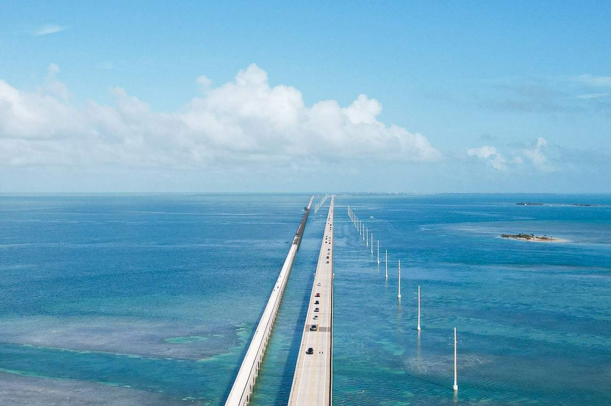
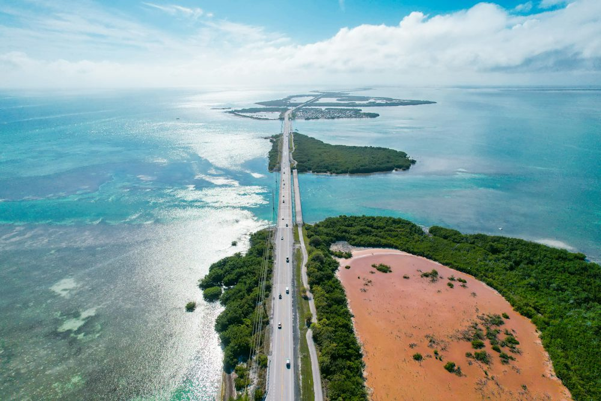

Leonida Keys Road Trip
The island road that inspired the Leonida Keys. A small-group minibus takes you down the Overseas Highway through Key Largo and Islamorada to the Seven Mile Bridge, with beach time at a state park and a seafood lunch stop.

At a glance
- Duration
- Full day
- Group
- Up to 12
- Departs
- 7:30a
- Meeting point
- Pickup in Miami
The island road that inspired the game’s Keys. Drive the Overseas Highway through Key Largo and Islamorada to the Seven Mile Bridge, with beach time and a seafood lunch stop.
What's included
- Air-conditioned minibus and host
- Key Largo and Islamorada stops
- Seven Mile Bridge photo stop
- Beach time at a state park
- Crew Souvenir Map + bandana
Best for
- Road-trip crews
- Beach and water lovers
- A full-day adventure
Itinerary

1. Key Largo
Inspired · first island stopThe first of the islands, at the top of the Overseas Highway.
2. Islamorada
Inspired · seafood lunch stopIsland stop for lunch and a stretch by the water.
3. Seven Mile Bridge
Inspired · the bridge shotPhoto stop at the bridge that runs to the horizon.
4. State park beach
Inspired · beach timeSwim and turquoise water before the drive back.
Questions about this tour
How long is the Florida Keys day trip?
A full day, with a 7:30am pickup in Miami.
Do we go to Key West?
No. The route covers Key Largo, Islamorada and the Seven Mile Bridge, which leaves time for the beach instead of a long day on the road.
Is this an official game tour?
No. Leonida Tours is an independent South Florida tour company running unofficial tours. We take you IRL to the real places that inspired the game's world. We are not affiliated with, endorsed or sponsored by Rockstar Games or Take-Two Interactive.
What does reserving mean?
It's free and there's no payment today. We email you to confirm your date before public booking opens, plus 20% off your first tour.
What if it rains?
Every route has covered stops. If a storm cancels your tour, rebook for free or get a full refund.
Reserve now. Ride first.
Tell us your date and group size and we'll confirm your spot before public booking opens, plus 20% off your first tour.
Reserve Leonida Keys Road Trip